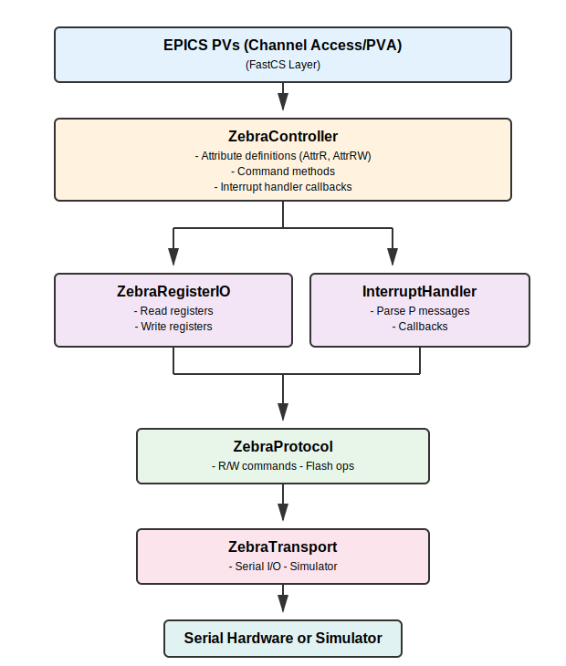
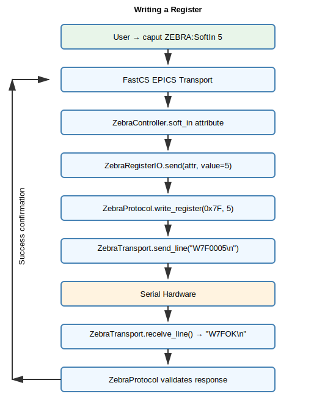

Architecture#
This document describes the architecture of the FastCS Zebra driver, explaining how the major components interact to provide EPICS control of Zebra hardware.
Overview#
The FastCS Zebra driver is structured in layers, from low-level serial communication up to high-level EPICS PV exposure:

Core Components#
1. ZebraTransport#
File: src/fastcs_zebra/transport.py
Purpose: Manages the physical connection to Zebra hardware via serial port or simulator.
Key Responsibilities:
Opens and closes serial connections using
aioserialfor asyncio compatibilityProvides
send_line()andreceive_line()for text-based communicationSupports both real hardware and simulated Zebra devices
Detects simulator mode via
sim://port prefix
Key Methods:
async connect()- Establishes serial connectionasync disconnect()- Closes serial connectionasync send_line(message: str)- Sends ASCII command with newline terminatorasync receive_line() -> str- Receives ASCII response until newline
Design Notes:
Uses asyncio for non-blocking I/O to prevent blocking the EPICS IOC
aioserialis an optional dependency (only needed for real hardware)Simulator mode uses in-memory
ZebraSimulatorfor testing without hardware
2. ZebraProtocol#
File: src/fastcs_zebra/protocol.py
Purpose: Implements the Zebra serial protocol for register operations and flash commands.
Key Responsibilities:
Encodes read/write register commands (
R<AA>,W<AA><VVVV>)Parses responses and validates addresses
Handles 32-bit register pairs (LO/HI)
Executes flash save/load commands (
S,L)
Key Methods:
async read_register(addr: int) -> int- Read 16-bit registerasync write_register(addr: int, value: int)- Write 16-bit registerasync read_register_32bit(addr_lo: int, addr_hi: int) -> int- Read 32-bit valueasync write_register_32bit(addr_lo: int, addr_hi: int, value: int)- Write 32-bit valueasync save_to_flash()- Save configuration to non-volatile memoryasync load_from_flash()- Restore configuration from flash
Protocol Details:
All commands are ASCII text terminated with
\nRegister addresses are 2-digit hex (00-FF)
Register values are 4-digit hex (0000-FFFF for 16-bit)
32-bit values use consecutive LO/HI register pairs
See SERIAL_PROTOCOL_SPEC.md for complete protocol specification
3. InterruptHandler#
File: src/fastcs_zebra/interrupts.py
Purpose: Parses and processes asynchronous position compare interrupt messages from Zebra.
Key Responsibilities:
Detects and classifies interrupt messages (
PR,P<data>,PX)Parses position compare data (timestamp and encoder/divider/system bus values)
Provides callback mechanism for reset, data, and end events
Key Methods:
async process_message(message: str)- Parse interrupt message and invoke callbackson_reset(callback)- Decorator to register reset callback (PRmessage)on_data(callback)- Decorator to register data callback (P<data>message)on_end(callback)- Decorator to register end callback (PXmessage)
Data Structure:
@dataclass
class PositionCompareData:
timestamp: int # 32-bit timestamp counter
encoder1: int | None # Signed 32-bit encoder position
encoder2: int | None
encoder3: int | None
encoder4: int | None
sys_bus1: int | None # Unsigned 32-bit system bus state
sys_bus2: int | None
div1: int | None # Unsigned 32-bit divider count
div2: int | None
div3: int | None
div4: int | None
Interrupt Format:
PR- Reset buffers (start of acquisition)P<TTTTTTTT><EEEEEEEE>...- Data message with timestamp and optional fieldsPX- End of acquisition
Which fields are present depends on the PC_BIT_CAP register configuration.
4. ZebraRegisterIO#
File: src/fastcs_zebra/zebra_controller.py
Purpose: FastCS AttributeIO implementation for Zebra register operations.
Key Responsibilities:
Bridges FastCS attributes to Zebra protocol layer
Implements
update()method for reading register values into attributesImplements
send()method for writing attribute values to registersHandles both 16-bit and 32-bit registers
Key Methods:
async update(attr)- Read from hardware and update attribute valueasync send(attr, value)- Write attribute value to hardwareset_protocol(protocol)- Configure the protocol instance after connection
Integration with FastCS:
Inherits from
AttributeIO[NumberT, ZebraRegisterIORef]Uses
ZebraRegisterIORefdataclass to specify register address and propertiesSupports automatic polling via
update_periodin the IO reference
5. ZebraController#
File: src/fastcs_zebra/zebra_controller.py
Purpose: Top-level FastCS controller that exposes Zebra functionality as EPICS PVs.
Key Responsibilities:
Defines FastCS attributes for Zebra registers and status
Manages connection lifecycle (connect/disconnect)
Sets up interrupt monitoring background task
Provides command methods for operations like arm/disarm
Coordinates all lower-level components
Current Attributes (Phase 1 implementation):
connected- Connection status (read-only)sys_ver- Firmware version from register 0xF0 (read-only)sys_staterr- System state/error from register 0xF1 (read-only)pc_num_cap- Position compare capture count from registers 0xF6/0xF7 (read-only, 32-bit)pc_enc- Encoder selection from register 0x88 (read-write)pc_tspre- Timestamp prescaler from register 0x89 (read-write)soft_in- Software inputs from register 0x7F (read-write)pc_time_last,pc_enc1_lastthroughpc_enc4_last- Last captured values (updated by interrupts)status_msg- Human-readable status message (read-only)
Command Methods (Phase 1):
pc_arm- Arm position compare (write register 0x8B)pc_disarm- Disarm position compare (write register 0x8C)save_to_flash- Save configuration to flash memoryload_from_flash- Restore configuration from flash memorysys_reset- Reset Zebra system (write register 0x7E)
Connection Lifecycle:

Interrupt Monitoring:
Background asyncio task continuously monitors transport for interrupt messages
Routes messages to
InterruptHandlerfor parsingUpdates last captured value PVs when position compare data arrives
Handles reset (
PR) and end (PX) messages
6. FastCS Integration#
The driver leverages FastCS framework features:
Attributes:
AttrR- Read-only attributes (status, version, captured values)AttrRW- Read-write attributes (encoder selection, prescaler, soft inputs)AttrW- Write-only attributes (commands)
IO References:
@dataclass
class ZebraRegisterIORef(AttributeIORef):
register: int # Register address (0x00-0xFF)
is_32bit: bool = False # True for 32-bit register pairs
register_hi: int | None = None # High register for 32-bit values
update_period: float | None = 1.0 # Auto-polling interval
EPICS Transport:
EpicsCATransport- Provides Channel Access (CA) protocol supportEpicsPVATransport- Provides Process Variable Access (PVA) protocol supportBoth transports expose the same controller attributes as EPICS PVs
PV Naming Convention:
<pv_prefix>:<attribute_name>
Examples:
ZEBRA:Connected
ZEBRA:SysVer
ZEBRA:PcEnc
ZEBRA:PcEnc1Last
Data Flow Examples#
Reading a Register#

Writing a Register#

Position Compare Interrupt#

Asyncio Architecture#
All I/O operations are asynchronous using Python’s asyncio to prevent blocking the EPICS IOC:
Transport layer: Uses
aioserialfor non-blocking serial I/OProtocol layer: All read/write methods are
asyncController layer: Connection, updates, and commands are
asyncInterrupt monitoring: Runs as a background
asyncio.Task
Benefits:
IOC remains responsive during slow serial operations
Multiple concurrent operations possible
Clean cancellation on disconnect
No thread management complexity
Future Expansion#
The current Phase 1 implementation focuses on basic register I/O and position compare monitoring. Future phases will add:
Phase 2: Complete register abstraction
Full register map with all 256 registers
System bus signal mapping
Register name/type lookup tables
Phase 3: Controller hierarchy
Logic gates (AND1-4, OR1-4) as sub-controllers
Pulse generators (PULSE1-4)
Dividers (DIV1-4)
Gate generators (GATE1-4)
Output routing (OUT1-8)
Phase 4: Motor integration
Motor record links for position scaling
ERES (encoder resolution) and OFF (offset) handling
Position setting commands
Phase 5: Position compare arrays
Waveform data arrays (PC_TIME, PC_ENC1-4, etc.)
Filtered system bus extraction
NDArray support for AreaDetector compatibility
Each phase will build on the existing architecture without requiring major restructuring.